Thermal cameras
Swipe or scroll sideways through all 7 panels. Tap a panel to enlarge it.
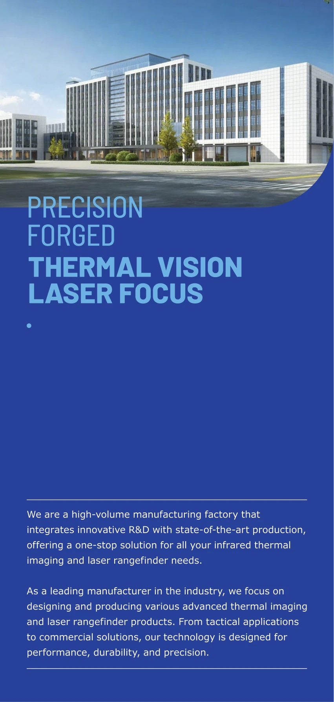
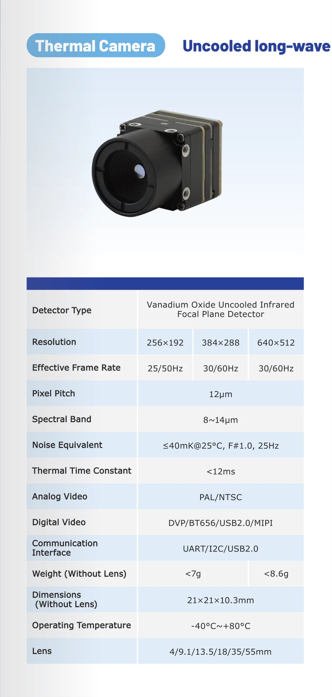
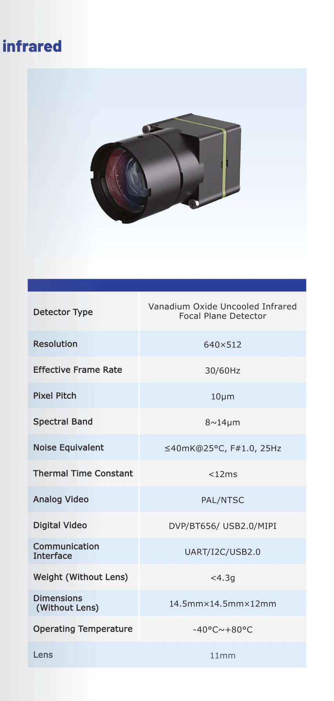
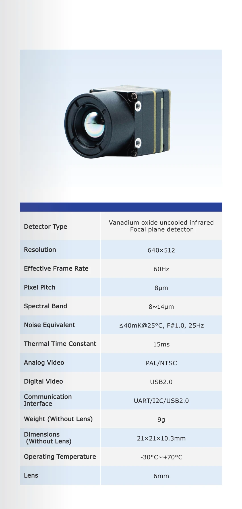
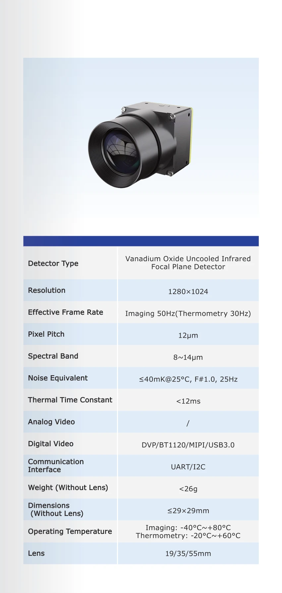
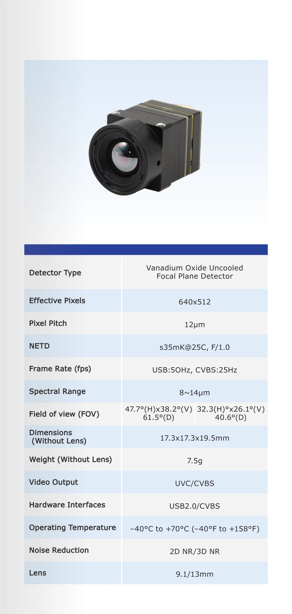
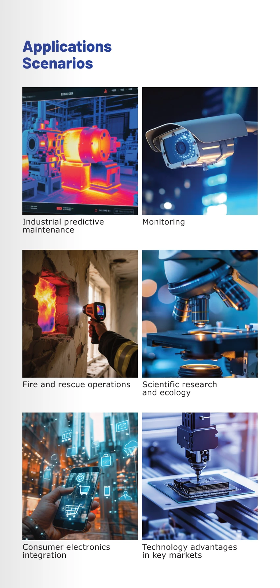
Laser rangefinders
Swipe or scroll sideways through all 7 panels. Tap a panel to enlarge it.
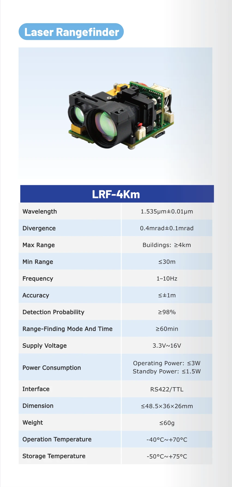
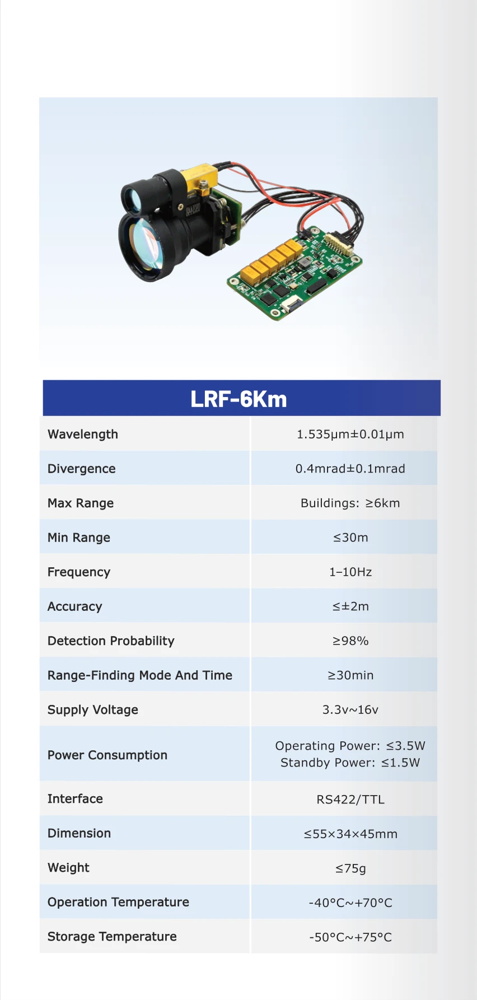
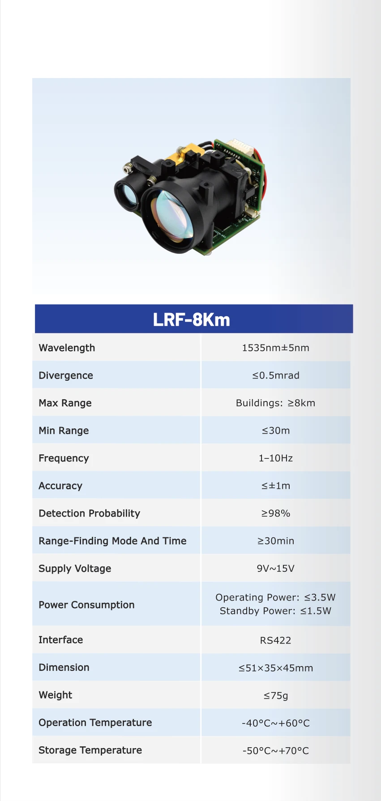
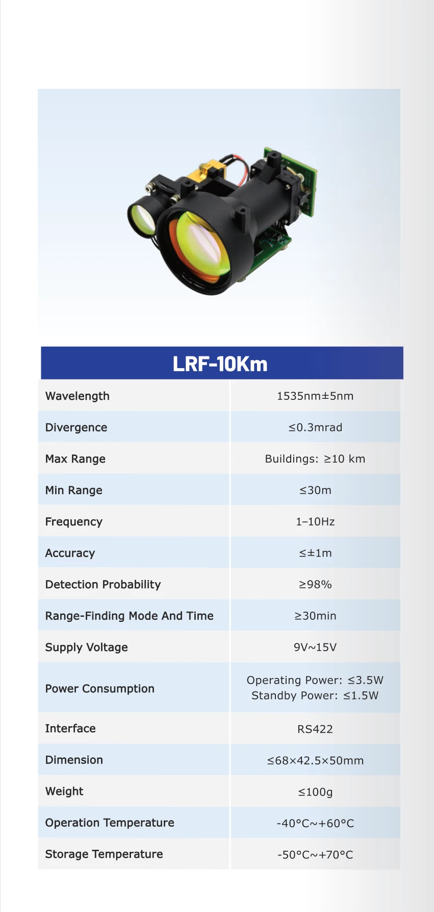
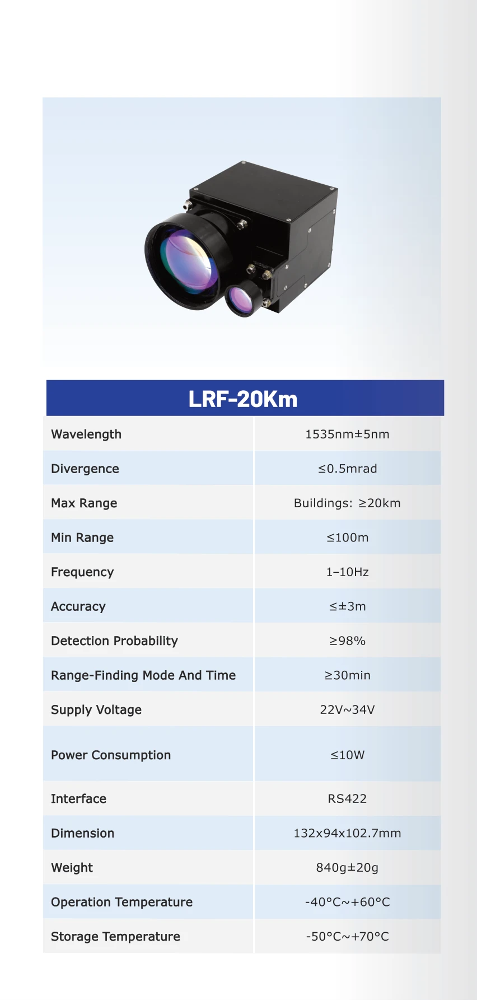
The reading PDF keeps the original two-page layout with images optimized for a smaller download. The original-quality file is also available above. On phones, your browser may open a PDF first; use its Share or Save option to keep a copy.